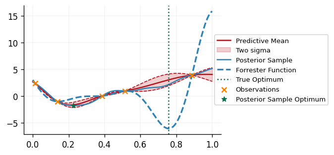
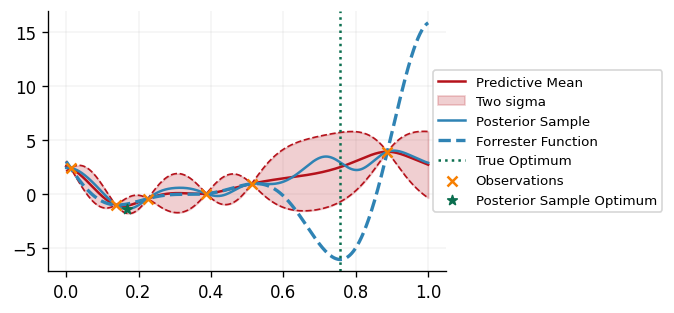
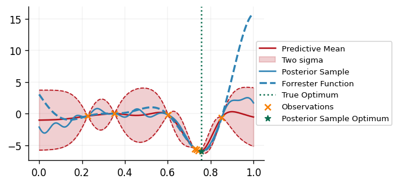
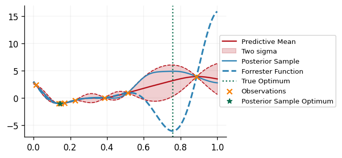
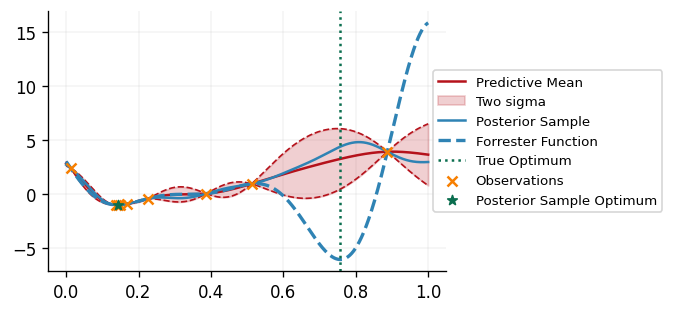
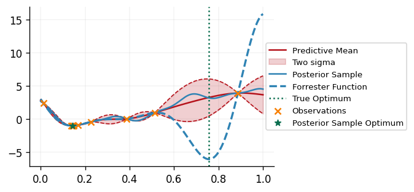

Introduction to Decision Making with GPJax
In this notebook we provide an introduction to the decision making module of GPJax, which can be used to solve sequential decision making problems. Common examples of such problems include Bayesian optimisation (BO) and experimental design. For an in-depth introduction to Bayesian optimisation itself, be sure to checkout out our Introduction to BO Notebook.
We'll be using BO as a case study to demonstrate how one may use the decision making module to solve sequential decision making problems. The goal of the decision making module is to provide a set of tools that can easily be used to solve a wide range of sequential decision making problems. The module is designed to be modular, and so it is easy to swap out different components of the decision making pipeline. Whilst it provides the functionality for quickly implementing a typical deicision making loop out of the box, we also hope that it will provide sufficient flexibility to allow users to define their own, more exotic, decision making pipelines.
# Enable Float64 for more stable matrix inversions.
from jax import config
import jax.numpy as jnp
import jax.random as jr
import matplotlib as mpl
import matplotlib.pyplot as plt
import optax as ox
from examples.utils import use_mpl_style
import gpjax as gpx
from gpjax.decision_making.decision_maker import UtilityDrivenDecisionMaker
from gpjax.decision_making.posterior_handler import PosteriorHandler
from gpjax.decision_making.search_space import ContinuousSearchSpace
from gpjax.decision_making.utility_functions import ThompsonSampling
from gpjax.decision_making.utility_maximizer import (
ContinuousSinglePointUtilityMaximizer,
)
from gpjax.decision_making.utils import (
OBJECTIVE,
build_function_evaluator,
)
from gpjax.typing import (
Array,
Float,
)
config.update("jax_enable_x64", True)
# set the default style for plotting
use_mpl_style()
key = jr.key(42)
cols = mpl.rcParams["axes.prop_cycle"].by_key()["color"]
The Black-Box Objective Function
We'll be using the same problem as in the Introduction to BO Notebook, but rather than focussing on the mechanics of BO we'll be looking at how one may use the abstractions provided by the decision making module to implement the BO loop.
In BO, and sequential decision making in general, we will often have a black-box function of interest which we can evaluate. In this notebook we'll be using the Forrester function as our objective to minimise:
def forrester(x: Float[Array, "N 1"]) -> Float[Array, "N 1"]:
return (6 * x - 2) ** 2 * jnp.sin(12 * x - 4)
Within the decision making loop, we'll be querying the black-box objective function many
times, and will often use the observed values to fit some probabilistic model. Thereore,
it would be useful to have some method to which we can pass a set of points which we
wish to query the black-box function at, and which will return a GPJax Dataset object
containing the observations. We can use the build_function_evaluator function provided
in decision_making.utils to do this. This function takes as input a dictionary of
labelled black-box functions, and will return a function evaluator, which can be called
with a set of points to evaluate the black-box functions at. The function evaluator will
return a dictionary of labelled Dataset objects containing the observations. Note that
in our case we only have one black-box function of interest, but in general we may have
multiple different black-box functions, such as if we also have constraint functions.
The use of the labels inside the dictionary returned by the function evaluator enables
us to easily distinguish between these different observations.
The Search Space
Having defined a method for evaluating the black-box function, we now need to define the
search space over which we wish to optimise. In this case we'll be optimising over the
interval \([0, 1]\). We can use the ContinuousSearchSpace class provided in
decision_making.search_space to define this search space, as seen below:
lower_bounds = jnp.array([0.0])
upper_bounds = jnp.array([1.0])
search_space = ContinuousSearchSpace(
lower_bounds=lower_bounds, upper_bounds=upper_bounds
)
The ContinuousSearchSpace class defines a sample method, which can be used to
sample points from the search space using a space-filling design, in this case using the
Halton sequence. This will be useful at
many points throughout the decision making loop, but for now let's use it to create an
initial set of points which we can use to fit our models:
The Surrogate Models
Many sequential decision making algorithms are described as being model-based. With
these algorithms, we use a probabilistic model, or multiple models, to drive the
decision making process. In ordinary BO, a probabilistic model is used to model the
objective function, and it is updated based on observations from the black-box objective
function. These models are often referred to as surrogate models, and are used to
approximate the functions of interest. We'll be using the Gaussian process functionality
provided by GPJax to define our surrogate models, with some wrappers provided by the
decision_making module to make it easier to use these models within the decision
making loop. We can proceed as usual when defining our priors, choosing a suitable
mean function and kernel for the job at hand:
mean = gpx.mean_functions.Zero()
kernel = gpx.kernels.Matern52(n_dims=1)
prior = gpx.gps.Prior(mean_function=mean, kernel=kernel)
One difference from GPJax is the way in which we define our likelihood. In GPJax, we
construct our GP posteriors by defining a likelihood object and then multiplying it
with our prior to get the posterior, posterior = likelihood * prior. However, the
AbstractLikelihood objects takes num_datapoints as one of its arguments, and this is
going to be changing in the case of BO, and decision making in general, as we keep
updating our models having observed new data! In order to deal with this we'll define a
likelihood_builder, which takes as an argument the number of datapoints used to
condition our prior on, and returns a likelihood object. Below we use this to
construct a likelihood_builder which will return a Gaussian likelihood, initialised
with the correct number of datapoints:
likelihood_builder = lambda n: gpx.likelihoods.Gaussian(
num_datapoints=n, obs_stddev=jnp.array(1e-3)
)
Now we have all the components required for constructing our GP posterior. Since we'll
be updating the posterior throughout the decision making loop as we observe more data,
it would be useful to have an object which can handle all this logic for us.
Fortunately, the decision_making module provides the PosteriorHandler class to do
this for us. This class takes as input a prior and likeligood_builder, which we have
defined above. We tend to also optimise the hyperparameters of the GP prior when
"fitting" our GP, as demonstrated in the Regression
notebook. This will be
using the GPJax fit method under the hood, which requires an optimization_objective,
optimizer and num_optimization_iters. Therefore, we also pass these to the
PosteriorHandler as demonstrated below:
posterior_handler = PosteriorHandler(
prior,
likelihood_builder=likelihood_builder,
optimization_objective=lambda p, d: -gpx.objectives.conjugate_mll(p, d),
optimizer=ox.adam(learning_rate=0.01),
num_optimization_iters=1000,
)
posterior_handlers = {OBJECTIVE: posterior_handler}
Note that we also create a labelled dictionary of posterior_handlers. This is a
recurring theme with the decision making logic; we can have dictionaries containing
datasets, posteriors and black box functions, and use labels to identify corresponding
objects the dictionaries. For instance, here we have an "OBJECTIVE" posterior handler
which is updated using the data in the "OBJECTIVE" dataset, which is in turn generated by the "OBJECTIVE" black-box function.
Now, as the decision making loop progresses, we can use the update_posterior method of
the PosteriorHandler to update our posterior as we observe more data. Note that we use
the term posterior to refer to our GP posterior surrogate models in order to be
consistent with the syntax used by GPJax. However, these GP posteriors are more widely
referred to as models in the model-based decision making literature.
The Utility Function
Now all that remains for us to define is the utiliy function, and a way of maximising
it. Within the utility-driven decision making framework, we define a utility function,
often using our GP surrogates, which characterises the utility, or usefulness, of
querying the black-box function at any point within the domain of interest. We can then
maximise this function to decide which point to query next. In this case we'll be
using Thompson sampling as a utility function for determining where to query next. With
this function we simply draw a sample from the GP posterior, and choose the minimizer
of the sample as the point to query next. In the decision_making framework we create
UtilityFunctionBuilder objects. Currently, we only support
SinglePointUtilityFunctions, which are utility functions which characterise the
utility of querying a single point. Thompson sampling is somewhat of a special case, as
we can draw \(B\) independent samples from the GP posterior and optimise each of these
samples in order to obtain a batch of points to query next. We'll see an example of
this later on.
Within the ThompsonSampling utility function builder class we implement the
build_utility_function method, which takes as input a dictionary containing lablled GP
posteriors, as well as the corresponding datasets for these posteriors, and draws an
approximate sample from the GP posterior which is a surrogate for the objective
function. We instantiate our utility function builder below, specifying the number of
Random Fourier features to use when constructing the approximate samples from the GP posterior:
We also need a method for maximising the utility function. Since ThompsonSampling is
classed as a SinglePointUtilityFunction, we can use the
ContinuousSinglePointUtilityMaximizer to maximise it. This requires the user to
specify num_initial_samples and num_restarts when instantiating it. This first
queries the utility function at num_initial_samples points, and then uses the best of
these points as a starting point for L-BFGS-B, a gradient-based optimiser, to further
refine. This is repeated num_restarts times, each time sampling a different initial set
of num_initial_samples and the best point found is returned. We'll instantiate our
maximiser below:
acquisition_maximizer = ContinuousSinglePointUtilityMaximizer(
num_initial_samples=100, num_restarts=1
)
It is worth noting that ThompsonSampling is not the only utility function we could use,
since our module also provides e.g. ProbabilityOfImprovement, ExpectedImprovment,
which were briefly discussed in our previous introduction to Bayesian optimisation.
Putting it All Together with the Decision Maker
We now have all the ingredients ready for our Bayesian optimisation loop, so let's put
all the logic together using the UtilityDrivenDecisionMaker class provided by the
decision_making module. This class has 3 core methods:
1. ask - This method is used to decide which point(s) to query next.
2. tell - This method is used to tell the decision maker the results from querying the
black-box function at the points returned by ask, and will often update GP
posteriors in light of this data.
3. run - This is used to run the decision making loop for a specified number of
iterations, alternating between ask and tell.
For many decision making problems, the logic provided in the
UtilityDrivenDecisionMaker will be sufficient, and is a convenient way of gluing the
various bits of machinery involved in sequential decision making together. However, for
more exotic decision making loops, it is easy for the user to define their own decision
maker class by inheriting from the AbstractDecisionMaker class and defining their own
ask, tell and run methods.
However, we do also provide the user with some additional flexibility when using the
UtilityDrivenDecisionMaker class. Often we may wish to perform certain actions after
the ask step and the tell step, such as plotting the acquisition function and the
point chosen to be queried for debugging purposes. We can do this by passing a list of
functions to be called at each of these points as the post_ask and post_tell
attributes of the UtilityDrivenDecisionMaker. Both sets of functions are called with
the UtilityDrivenDecisionMaker as an argument, and so have access to all the
attributes of the decision maker. The post_ask functions are additionally passed the
most recently queried points too. We'll use this functionality to plot the acquisition
function and the point chosen to be queried at each step of the decision making loop:
def plot_bo_iteration(
dm: UtilityDrivenDecisionMaker, last_queried_points: Float[Array, "B D"]
):
posterior = dm.posteriors[OBJECTIVE]
dataset = dm.datasets[OBJECTIVE]
plt_x = jnp.linspace(0, 1, 1000).reshape(-1, 1)
forrester_y = forrester(plt_x.squeeze(axis=-1))
utility_fn = dm.current_utility_functions[0]
sample_y = -utility_fn(plt_x)
latent_dist = posterior.predict(plt_x, train_data=dataset)
predictive_dist = posterior.likelihood(latent_dist)
predictive_mean = predictive_dist.mean()
predictive_std = predictive_dist.stddev()
fig, ax = plt.subplots()
ax.plot(plt_x.squeeze(), predictive_mean, label="Predictive Mean", color=cols[1])
ax.fill_between(
plt_x.squeeze(),
predictive_mean - 2 * predictive_std,
predictive_mean + 2 * predictive_std,
alpha=0.2,
label="Two sigma",
color=cols[1],
)
ax.plot(
plt_x.squeeze(),
predictive_mean - 2 * predictive_std,
linestyle="--",
linewidth=1,
color=cols[1],
)
ax.plot(
plt_x.squeeze(),
predictive_mean + 2 * predictive_std,
linestyle="--",
linewidth=1,
color=cols[1],
)
ax.plot(plt_x.squeeze(), sample_y, label="Posterior Sample")
ax.plot(
plt_x.squeeze(),
forrester_y,
label="Forrester Function",
color=cols[0],
linestyle="--",
linewidth=2,
)
ax.axvline(x=0.757, linestyle=":", color=cols[3], label="True Optimum")
ax.scatter(dataset.X, dataset.y, label="Observations", color=cols[2], zorder=2)
ax.scatter(
last_queried_points[0],
-utility_fn(last_queried_points[0][None, ...]),
label="Posterior Sample Optimum",
marker="*",
color=cols[3],
zorder=3,
)
ax.legend(loc="center left", bbox_to_anchor=(0.950, 0.5))
plt.show()
Now let's put it all together and run our decision making loop for 6 iterations, with a batch size of 1:
dm = UtilityDrivenDecisionMaker(
search_space=search_space,
posterior_handlers=posterior_handlers,
datasets=initial_datasets,
utility_function_builder=utility_function_builder,
utility_maximizer=acquisition_maximizer,
batch_size=1,
key=key,
post_ask=[plot_bo_iteration],
post_tell=[],
)
results = dm.run(
6,
black_box_function_evaluator=function_evaluator,
)






We can see that our DecisionMaker is successfully able to find the minimimizer of the
black box function!
Conclusions
In this notebook we have provided an introduction to the new decision_making module of
GPJax. We have demonstrated how one may use the abstractions provided by this module to
implement a Bayesian optimisation loop, and have also highlighted some of the
flexibility provided by the module. We hope that this module will provide a useful
framework for solving a wide range of sequential decision making problems, and that it
will be easy for users to extend the functionality provided by the module to suit their
needs!
We should note that the decision_making module is still in its early stages, and so
whilst we hope to avoid making breaking changes to it, they may occur as the module
evolves and more advanced functionality is implemented. If people have any feedback or
features they would like to implement/see implemented, feel free to open an issue on the
GPJax GitHub page.
System Configuration
Author: Thomas Christie
Last updated: Tue Sep 03 2024
Python implementation: CPython
Python version : 3.10.14
IPython version : 8.27.0
optax : 0.2.3
gpjax : 0.9.1
jax : 0.4.27
matplotlib: 3.9.2
Watermark: 2.4.3